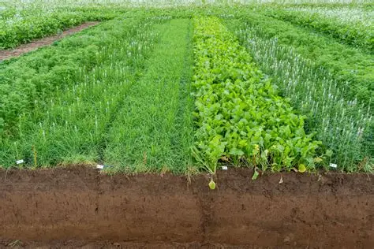

Data-Backed
Recommendations grounded in real soil and climate readings, not guesswork.
Smart Crop Advisory Platform
AgriSense recommends the best crop for your land using soil nutrients, temperature, humidity, rainfall, and pH — helping farmers make data-backed decisions instead of guesswork.

A small tool built around one goal: give farmers a clear, data-backed starting point before they commit a season to a crop.
Recommendations grounded in real soil and climate readings, not guesswork.
Enter your field data and get a recommendation back in seconds.
A simple interface anyone can use — no technical background needed.
Three simple steps stand between your field data and a confident crop decision.

Soil nutrients (N, P, K), temperature, humidity, pH, and rainfall.

A trained ML model matches your conditions against crop-yield patterns.

See the crop best suited to your land, with confidence you can act on.